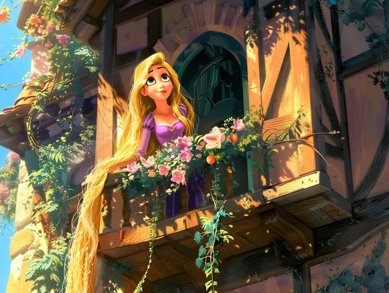

Rapunzel vive presa no alto de um castelo misterioso, guardado pela bruxa que controla sua vida desde criança. Seus longos cabelos dourados descem pela janela, iluminados pelo sol, e todos os dias ela sonha em liberdade.
Ela sonha em conhecer a floresta, os rios e as pessoas além das paredes frias do castelo. Mas em um certo amanhecer, algo muda: Rapunzel sente que é chegada a hora de decidir seu destino.
Rapunzel acorda com o coração cheio de coragem. Ao olhar pela janela, ela pensa no que fazer:
Rapunzel desce pelos corredores escondidos